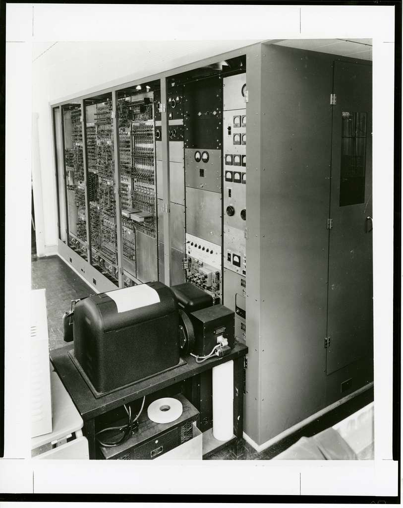
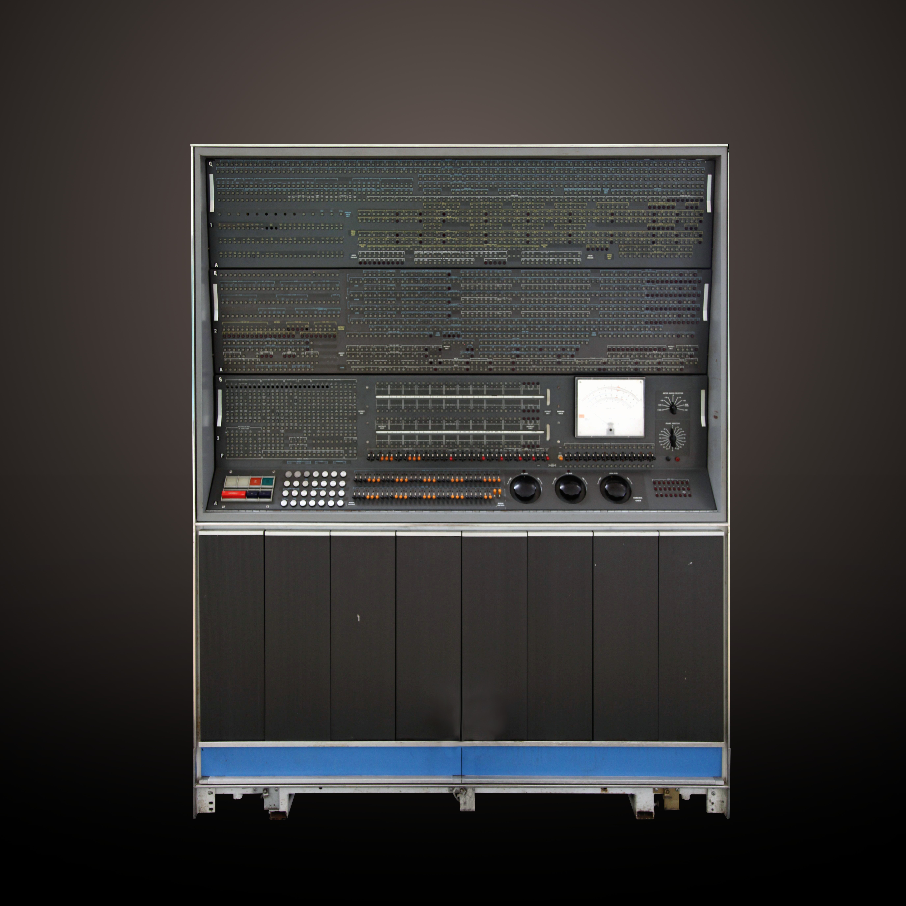

Explore the Topics
My topic is about the advancement of computer machinery and how computers have developed over time. Modern computers are pre-programmed and ready to use, but it’s important to recognize some of the past influences on the way we use computers today. Parts that are assembled today have much more complex components than computers even 10-15 years ago. These components have become much smaller, faster, and responsive. Some of the most important developments began with the idea of using machines to perform calculations and processes automatically. Over time, inventions such as the Analytical Engine, transistors, integrated circuits, microprocessors, and computer memory helped transform computing. These developments allowed computers to process information faster, store more data, and handle multiple tasks and processes. Today’s ideas are built of the old ones by ways of looking at data. We still provide and work by input designed to provide output through different systems by guiding the data into motion to provide results. It is therefore important to look at the parts and how they developed over time, with some computers now doing everything a human can. We have picked up ideas over the last few centuries that have changed the way people act, work and think about every day’s calculations of getting work done as efficiently as possible. Eventually we developed small and big ideas through computers, and learned different models provide safe and unsafe ways of distributing pieces of these ideas by producing one bit at a time. Important parts that gave us good performances and made computers what they are today are:
- Input and Output Devices
- Transistors
- Computer Memory
SEAC Computer

IBM 7030
